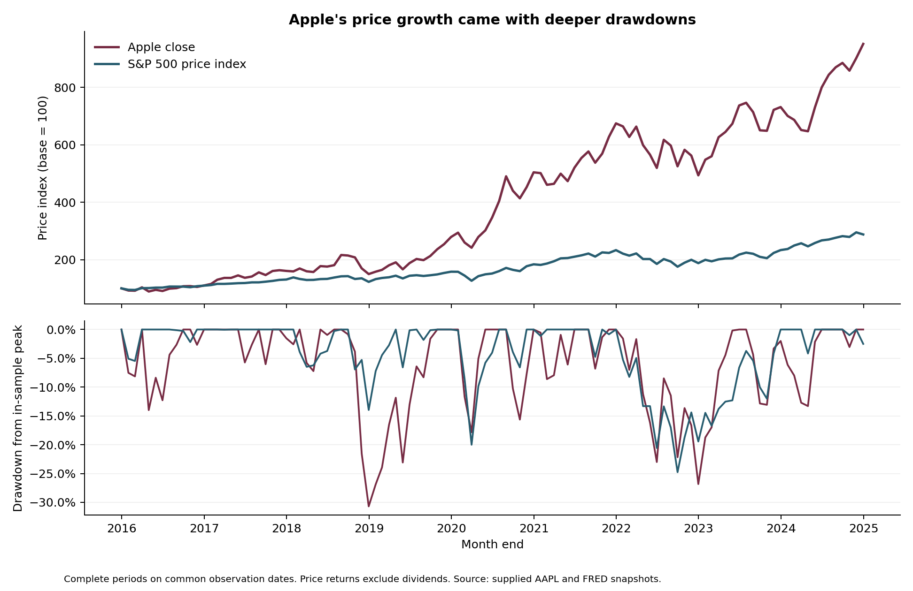

Python / Equity Risk / Macroeconomic Context
Apple Equity Risk & Macroeconomic Context
How much downside accompanied Apple’s historical price growth? I extended a price-and-volume study into a reproducible comparison of market performance, drawdowns and macroeconomic context.
- Author
- Grace Ngo
- Context
- Historical equity analysis; benchmark window January 2016–December 2024
- Evidence
- Six data snapshots; Python pipeline, notebook and tests
The decision behind the analysis
A strong historical return does not describe the full experience of holding a single equity. A risk review also needs the magnitude of drawdowns, the variability of returns and behavior during market declines. I framed the project around those questions and used macroeconomic series to describe the surrounding environment.
A comparable window
The market comparison uses 108 complete monthly returns from January 2016 through December 2024, with a December 31, 2015 baseline. I joined daily observations before selecting the last common date in each month and used Apple’s Close series alongside the S&P 500 price index.
The Apple snapshot ends January 3, 2025. That partial month is excluded. Dividends are excluded from the benchmark comparison, and the analysis does not present revised macroeconomic observations as information that was available to investors at the time.
What the data shows
| 2016–2024 measure | Apple | S&P 500 |
|---|---|---|
| Cumulative price return | 851.6% | 187.8% |
| Annualized monthly volatility | 28.1% | 15.5% |
| Maximum month-end drawdown | −30.7% | −24.8% |
Apple combined greater historical price growth with higher volatility and a deeper maximum month-end drawdown. Yet its geometric downside-capture ratio was 85.2% across the 34 benchmark-negative months. This distinction matters: the deepest cumulative decline and average behavior during market declines describe different aspects of risk.

Macroeconomic context
The longer Apple sample contains 300 monthly returns across 2000–2024. I calculated CPI inflation, twelve-month policy-rate changes and quarterly GDP growth, then reported the size and distribution of outcomes within explicit retrospective classifications. For example, mean monthly price return was 0.49% across 57 months when the twelve-month funds-rate increase was at least one percentage point.
Sample counts and outcome distributions accompany each retrospective group, allowing the reader to compare performance in its historical context.
What I built
The implementation includes an importable Python package, source validation, complete-period alignment, daily drawdown episodes, a credential-safe optional FRED client and an executed notebook. Ten automated checks cover date boundaries, missing periods, running peaks, unrecovered episodes and independent reconciliation to source prices. GitHub Actions repeats the offline run.
Research scope
The study compares historical price returns, volatility and month-end drawdowns, using common observation dates and explicit period definitions. Macroeconomic classifications describe the historical sample. The repository documents source conventions and calculation methods alongside the output tables.